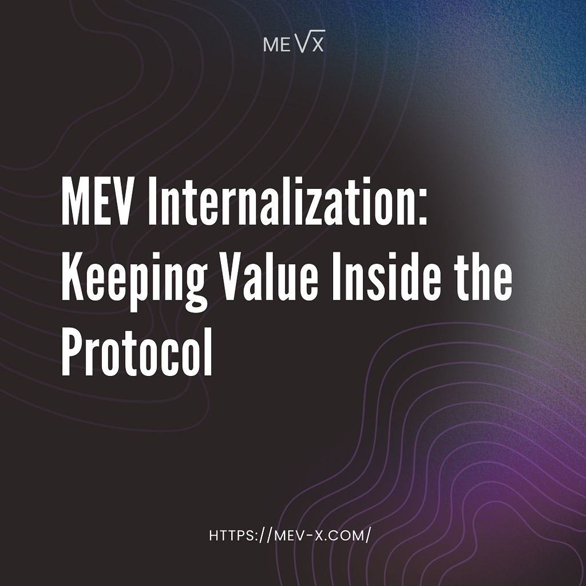
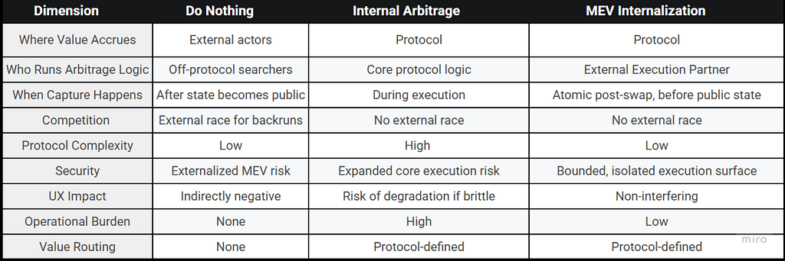

This material was created by the MEV-X team for educational purposes. MEV-X is a research and commercial project created for the extraction of MEV, which aims to form a reliable scientific community and promote the fair distribution of the extracted MEV.

Decentralized exchanges create value every time they execute a user transaction. However, a significant portion of this value does not remain within the protocol. Instead, it is systematically extracted by external actors who observe and react to state changes after execution. This dynamic has become so normalized that it is often treated as an unavoidable property of on-chain markets.
This article argues that it is not.
MEV leakage is not an inherent requirement of decentralized execution, but a design choice. Under the right execution model, the value created during state transitions can be internalized by the protocol itself, without altering user experience or execution guarantees.
MEV As a Structural Property of On-Chain Execution
Maximal Extractable Value is a structural property of on-chain execution, arising whenever a user transaction changes shared state. Any transaction that moves prices, rebalances pools, or updates reserves creates a temporary imbalance between the pre-state and post-state of the system. That imbalance represents economic value. MEV is simply the ability to capture it.
MEV is created inside the execution flow of the protocol, at the exact moment when a user transaction is executed and the state transition occurs (at this point: the new state is already determined, the price impact is known, but the updated state is not yet public).
This moment is often overlooked. While external searchers only observe MEV after state becomes public, the protocol itself necessarily sees the transition from the inside, as part of its normal execution logic. The remaining question is how protocols choose to handle the MEV created within their own execution flows.
Three Ways Protocols Can Deal with MEV
Once MEV is understood as an execution-level phenomenon, a protocol has only a limited set of architectural choices. These choices determine where the economic value created during execution ultimately accrues.
In practice, protocols converge to one of three approaches:
1. Do Nothing
The most common approach is to do nothing.
Under this model, the protocol executes user transactions without attempting to detect or react to the MEV created by state transitions. Any resulting arbitrage opportunities are left to be discovered and exploited by external participants.
As a result MEV is captured by arbitrageurs, searchers, and builders, users pay indirectly through worse execution and increased competition for block space, the protocol forfeits value created by its own execution flow.
This approach is simple and requires no additional infrastructure. The economic value created during execution is consistently realized outside the protocol.
2. Internal Arbitrage By The Protocol
A second approach is for the protocol to internalize MEV by directly performing arbitrage as part of its execution logic.
Under this model, the protocol actively detects price imbalances created by user transactions and executes compensating trades to capture the associated MEV internally. The protocol itself becomes responsible for identifying, executing, and settling arbitrage opportunities.
Doing this effectively embeds an “arbitrage engine” into the DEX execution path, turning a simple swap into a pipeline that must also identify, price, and execute follow-on trades safely and deterministically. The protocol must discover and maintain viable routes, search for an optimal trade size under bounded computation, and enforce strict guardrails so the additional work does not degrade block execution or introduce new failure modes.
This is a high bar for a DEX. It adds code complexity, increases the surface area for edge cases and security issues, and creates ongoing operational burden (route maintenance, parameter tuning, and performance monitoring). Even if the logic is correct, it must remain predictable under volatile market conditions and must never worsen user execution. These constraints are a major reason why fully in-protocol arbitrage remains uncommon in practice.
There is an implementation of this idea in Osmosis. It is described as a protocol module that backruns swaps and captures cyclic arbitrage as protocol revenue. However, we do not have sufficient public data here to confirm its current operational status or to evaluate its real-world effectiveness over time.
At the time of writing, we did not find publicly documented, production-grade examples of major DEXs on widely used networks running a full in-protocol arbitrage engine as part of swap execution. In mainstream AMMs, arbitrage remains an external layer: the protocol executes the trade, and third parties capture the resulting opportunities.
3. MEV Internalization via an External Execution Partner
A third approach is to internalize MEV without turning the DEX itself into an arbitrageur.
The core idea is that the protocol exposes a narrow, controlled execution surface (typically a post-swap callback or hook) so that an external execution partner can inspect the finalized post-swap state inside the same execution flow. If the state transition creates a profitable opportunity (e.g., a backrun arbitrage), that opportunity is executed atomically, and the resulting surplus is routed back to the protocol’s economic domain, where it can be distributed according to protocol policy (LPs, treasury, user rebates).
Conceptually, this model separates concerns. The DEX stays focused on executing user intent and maintaining the market, while MEV capture is implemented as an attached execution path that is triggered only when relevant. This keeps user experience unchanged in the common case, and it allows protocols to reclaim execution-level value without embedding a full arbitrage engine into the core swap logic.
At the same time, this approach shifts the design problem from “can the protocol do arbitrage” to “can the protocol safely and credibly internalize it.” The integration must ensure atomicity (no external race after state becomes public), strict boundaries on what the external component can do, and a transparent policy for where captured value goes. In practice, this is where modern hook-based AMM designs matter: they provide a standardized point in the execution lifecycle where such logic can run.
This is the central model we focus on in the rest of the article: it targets the main inefficiency of MEV leakage, while avoiding the operational and safety burden of running protocol-native arbitrage.

The table above summarizes the three approaches discussed in this section and highlights their key architectural differences. While all three interact with the same execution-level phenomenon, they differ in where MEV is captured, when capture occurs relative to execution, and how much complexity and risk the protocol assumes as a result.
Design Properties of MEV Internalization
For MEV internalization to be meaningful, it must satisfy a small set of design properties. These properties define what separates internalization from simply relocating MEV capture to a different actor.
Atomicity. The capture path must execute within the same on-chain execution flow as the user transaction. If MEV capture is delayed until after state becomes public, it reintroduces the same external race that defines traditional MEV extraction.
Non-Interference With User Execution. Internalization must not worsen the user’s outcome or change the user’s interaction model. The user swap should remain the primary action, with any MEV-capture logic strictly secondary and never allowed to reduce execution quality, increase revert risk, or introduce visible latency in the common case.
Strict Execution Boundaries. The external component must operate under explicit constraints. The integration surface should be narrow and well-defined, limiting what can be executed, under what conditions, and with what resource bounds. Without these guardrails, the system simply shifts risk from external searchers into protocol-adjacent execution.
Transparent Value Routing. Captured value must remain within the protocol’s economic domain under an explicit policy. Whether it is distributed to LPs, retained as protocol revenue, or partially rebated to users, the routing rules should be clear and enforceable at the protocol level.
With these requirements in place, the discussion shifts from principles to mechanism. The next section presents a concrete architecture that operationalizes internalization as an on-chain, bounded, and policy-driven component.
Homelander: The Leading MEV Internalization System
Homelander is an implementation of MEV internalization built around the third model described above: capturing post-swap MEV inside the execution flow and routing the resulting surplus back to the protocol. The plugin is already live in production, actively protecting trades and generating on-chain revenue.
The system focuses on a narrow class of opportunities that are created deterministically by a user swap: post-swap arbitrage. The core mechanism is to evaluate the finalized post-swap state from within the same execution context and, when profitable, execute a backrun atomically. This preserves the key internalization property: the opportunity is acted on before it becomes a public signal that external searchers can race on.
Architecturally, Homelander is designed to avoid the two failure modes discussed earlier. It does not leave MEV capture to off-protocol competition (which recreates the external race), and it does not require the DEX to embed a full arbitrage engine into its core swap logic (which pushes complexity and operational risk into the protocol). Instead, MEV capture is implemented as a constrained post-swap component with explicit trigger conditions and explicit value routing.
MEV leakage is not an unavoidable feature of on-chain markets. It is a consequence of how execution is structured and where protocols draw the boundary between user intent and value created during state transitions. Internalization reframes MEV from an external race into a protocol-level mechanism: one that can be constrained, policy-routed, and aligned with users and liquidity.
For a deeper look at Homelander’s mechanics, check the documentation and our earlier publications (I/II/III). If you’d like to explore an integration or partnership, you can reach us on Telegram.